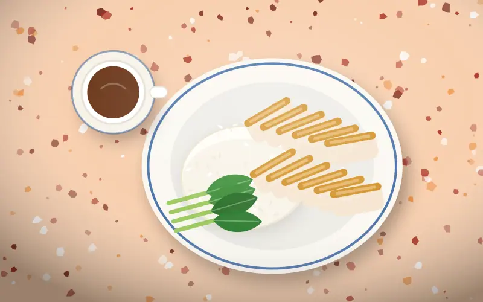

Cheap eats in Tsuen Wan 荃灣區
8 places, from $28. Tap one for prices, hours and the nearest MTR.

Yue Kee Roast Goose裕記大飯店 · Sham Tseng$98 Shanghai Lane (Tsuen Wan)上海弄堂菜肉餛飩（荃灣） · Tsuen Wan$72
Shanghai Lane (Tsuen Wan)上海弄堂菜肉餛飩（荃灣） · Tsuen Wan$72  Lo Chiu Vietnamese (Tsuen Wan)老趙越南餐廳（荃灣） · Tsuen Wan$68
Lo Chiu Vietnamese (Tsuen Wan)老趙越南餐廳（荃灣） · Tsuen Wan$68  TamJai SamGor (Tsuen Wan)譚仔三哥米線（荃灣） · Tsuen Wan$52
TamJai SamGor (Tsuen Wan)譚仔三哥米線（荃灣） · Tsuen Wan$52  Bafang Dumpling (Tsuen Wan)八方雲集（荃灣） · Tsuen Wan$36
Bafang Dumpling (Tsuen Wan)八方雲集（荃灣） · Tsuen Wan$36  Meet Fresh (Tsuen Wan)鮮芋仙（荃灣） · Tsuen Wan$45
Meet Fresh (Tsuen Wan)鮮芋仙（荃灣） · Tsuen Wan$45  Tsui Wah (Tsuen Wan)翠華（荃灣） · Tsuen Wan$72
Tsui Wah (Tsuen Wan)翠華（荃灣） · Tsuen Wan$72  Saint Honoré (Tsuen Wan)聖安娜餅屋（荃灣） · Tsuen Wan~$28
Saint Honoré (Tsuen Wan)聖安娜餅屋（荃灣） · Tsuen Wan~$28